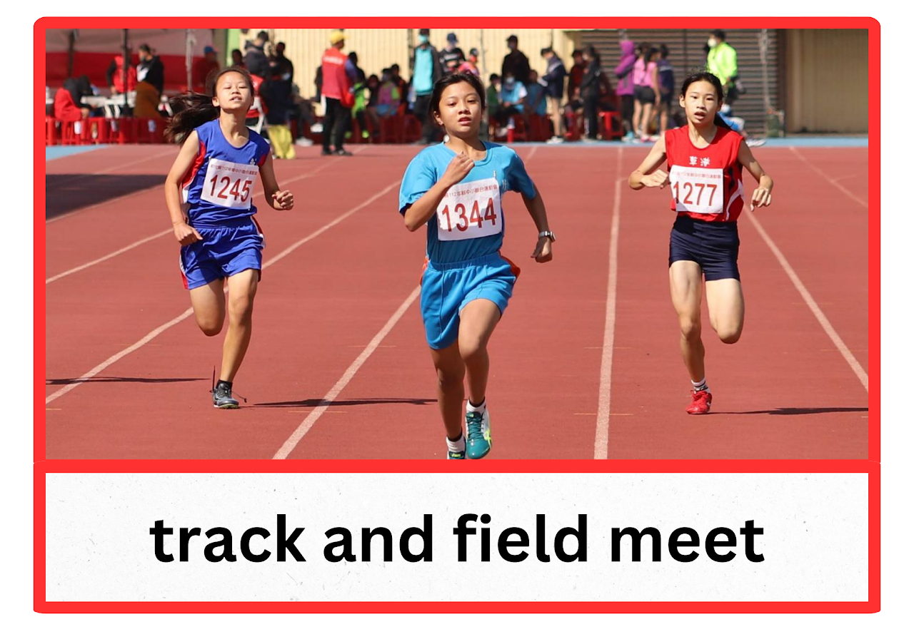
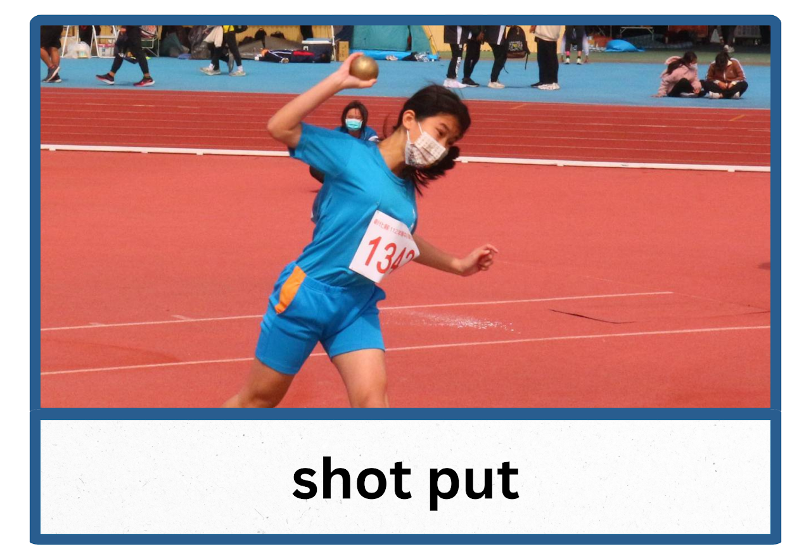
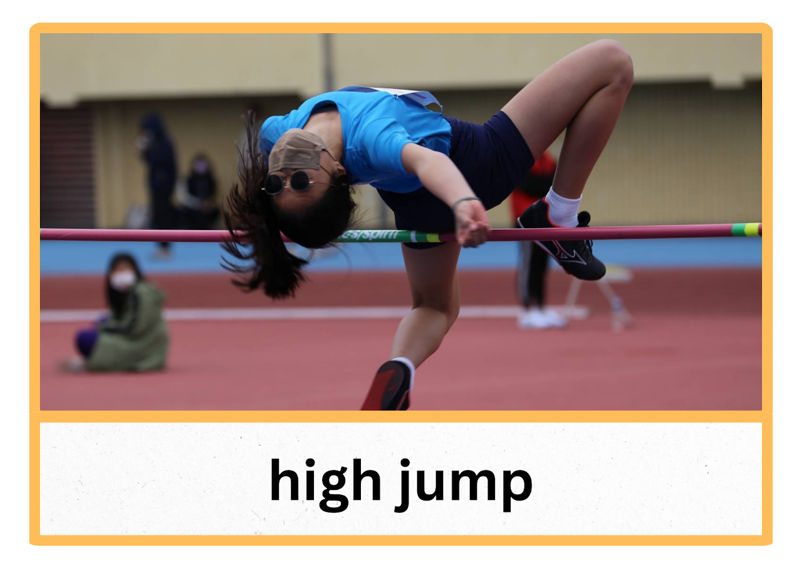
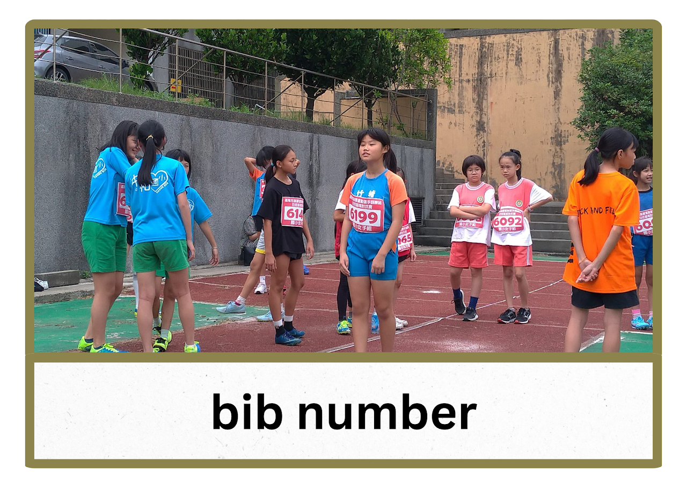
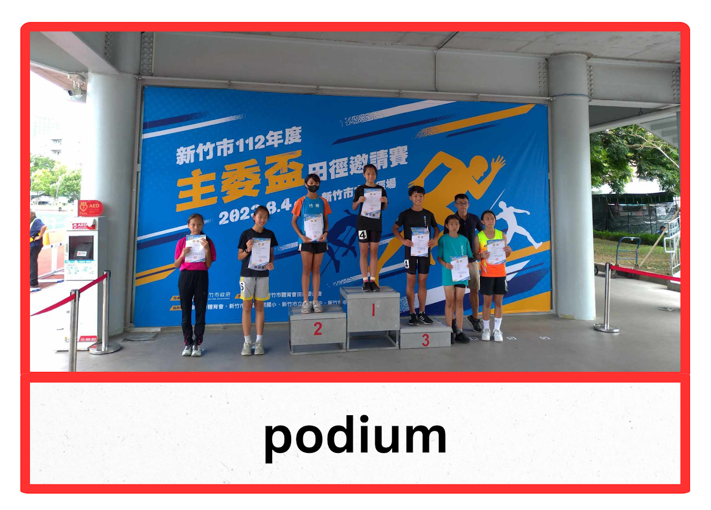
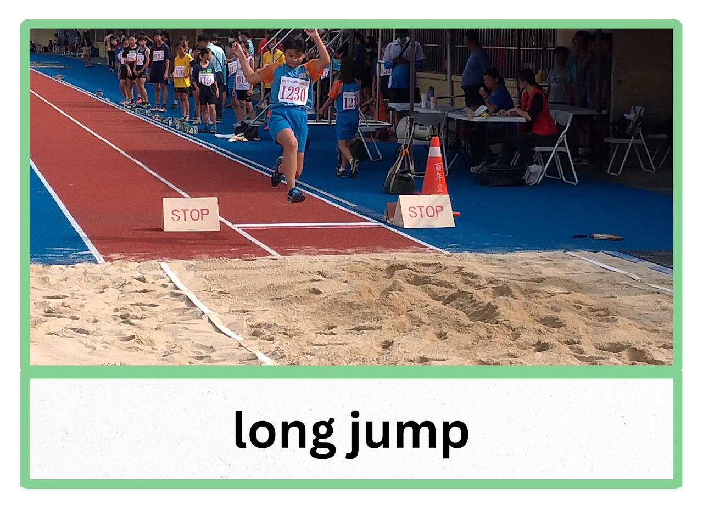
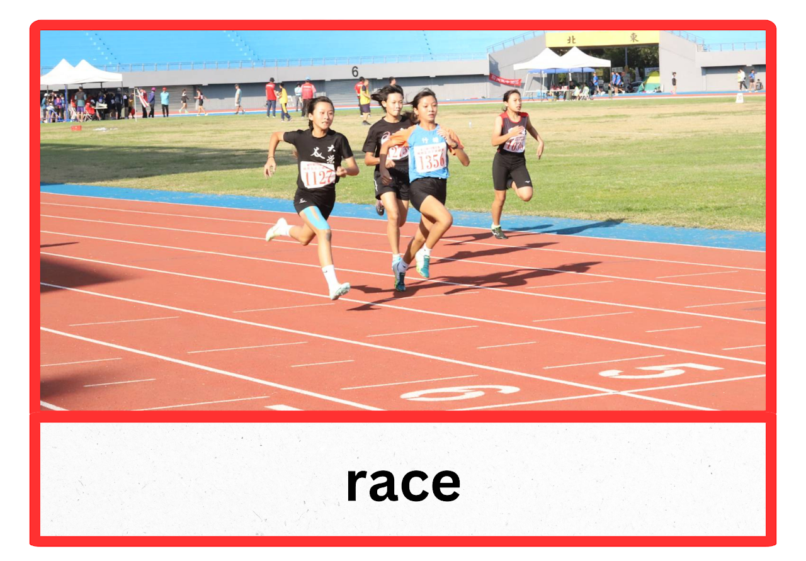
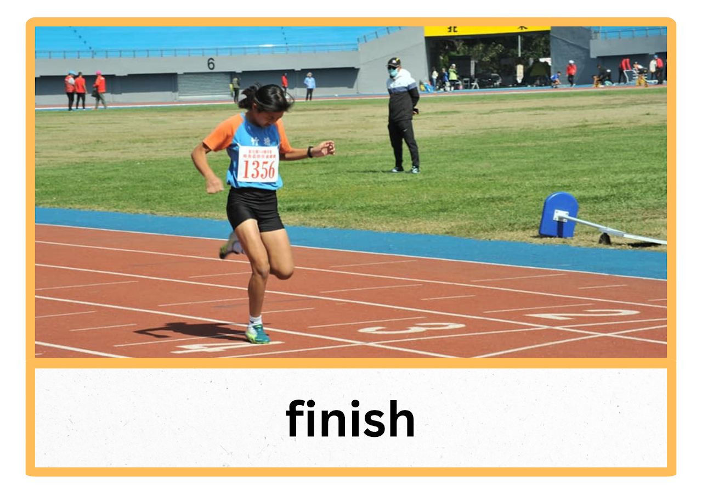
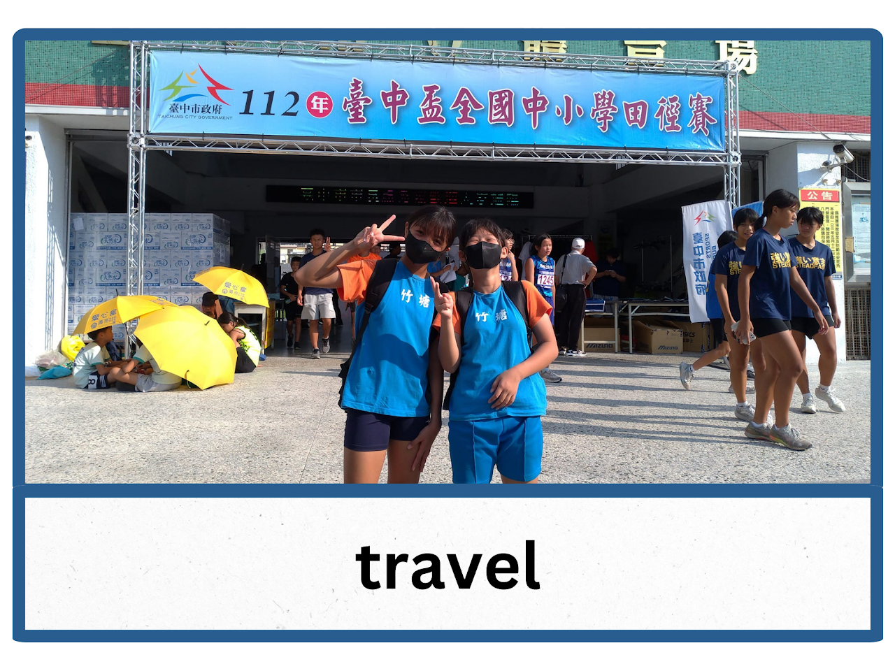
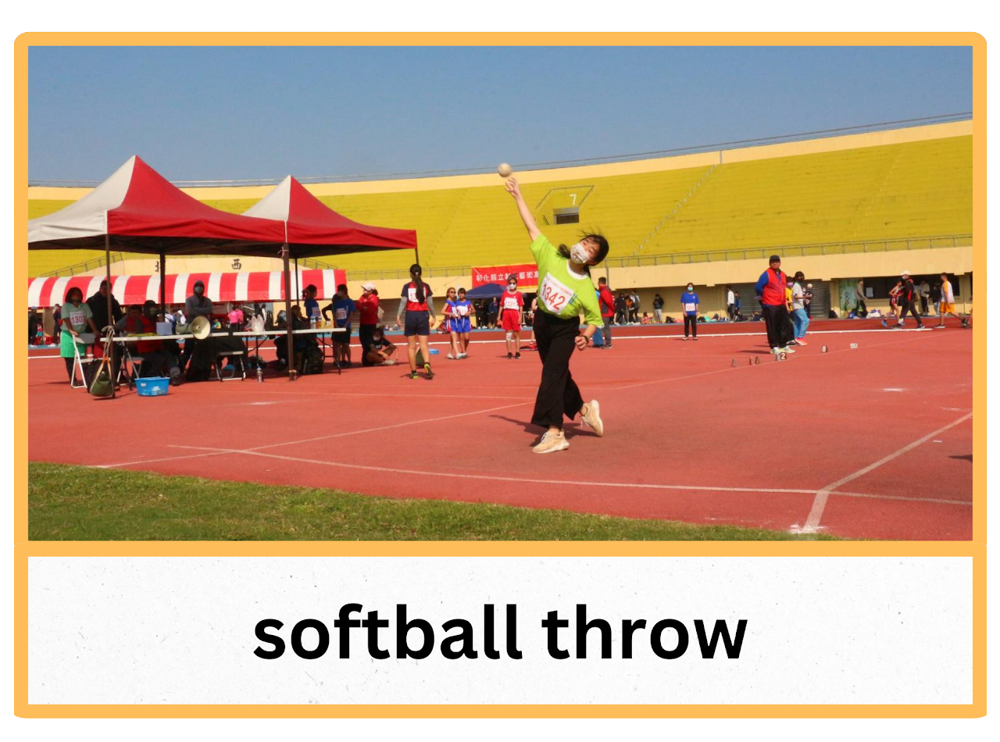

The track and field team goes to the track and field meet to compete.
田徑隊參加田徑比賽。

Shot put is one of many events at the track and field meet.
鉛球是田徑比賽中的眾多項目之一。

Some students compete in the high jump event.
一些學生參加跳高比賽。

The students have to wear a bib number for track and field meets.
學生們必須在田徑比賽中佩戴號碼布。

The winners of events stand on the podium.
比賽的獲勝者站在領獎台上。

The students compete in the long jump event.
學生們參加跳遠比賽。

The students compete in different races.
學生們參加不同的賽跑。

The students finish races.
學生們完成賽跑。

The track and field team travels to many places for track and field meets.
田徑隊為了參加田徑比賽而去到許多不同的地方。

The softball throw is another event in track and field.
壘球投擲是田徑中的另一個項目。